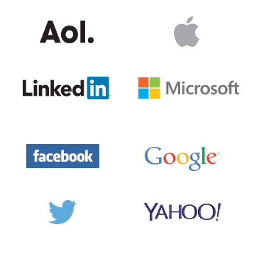
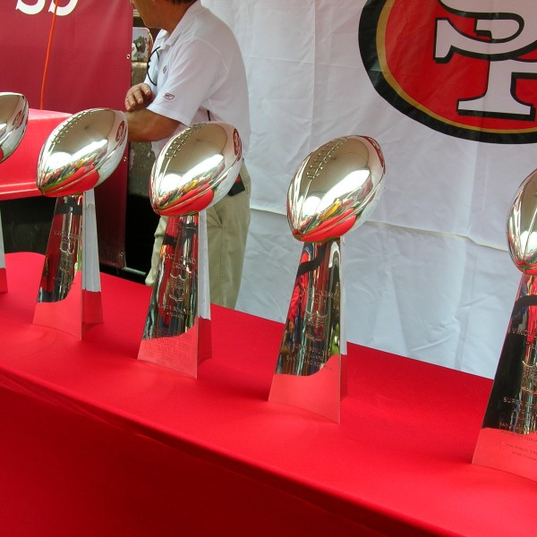

The Development of Linux
Linus Torvalds invented Linux itself. In 1991, Torvalds was a student at the University of Helsinki in Finland where he had been using Minix, a non-free Unix-like system, and began writing his own kernel. He started by developing device drivers and hard-drive access, and by September had a basic design that he called Version 0.01. This kernel, which is called Linux, was afterwards combined with the GNU system to produce a complete free operating system.
-
1991
Linus Torvalds posts famous message - "Hello Everybody out there.." and releases first Linux code.
-

1992
Linux licenses Linux under the GPL, an important decision that will contribute to its success in the coming years.
-
1993
Slackware becomes first widely adopted distribution.
-
1996
Linux visits aquariam, gets bit by a penguin and chooses it as Linux mascost.
-

1998
Tech giants begin announcing platform support for Linux.
-

1999
Red hat goes public.
-

2003
IBM runs famous linux Ad during the superbowl.
-
2005
Linux appears on the cover of Businessweek with a story that hails linux as a Business success.
-
2007
The Linux foundation is formed to promote protect and standardize Linux Linus IS a fellow.
-
2010
The Linux based android OS outships all other smartphone OSES in the U.S. and climbs to dominance.
-

2011
Linux turns 20 and powers the world's supercomputers, stock exchanges, phones, ATMs, Healthcare Records, Smart grids, The list goes on.